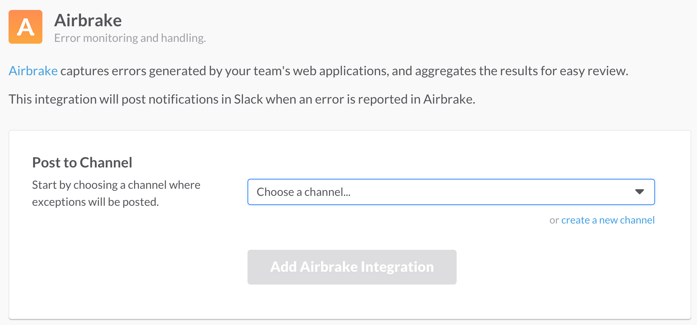
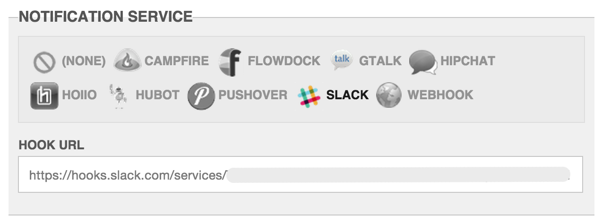

The slack notification sends to Slack.

Copy the Hook URL specified by the Slack service.
Optionally change the name of the integration to “Errbit”, and include the errbit logo for inline messages:
On the App Edit Page, click to highlight the slack integration. Input the hook url from above into the field and click save.
